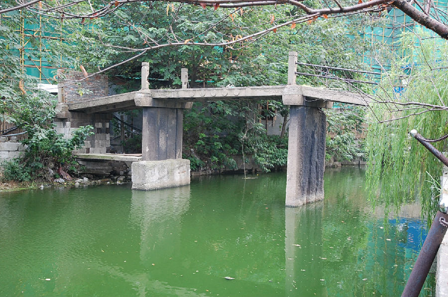

嘉兴市文物保护网 · 市级文物保护点 · 2020-11-09 · 原文

月河丰乐桥位于嘉兴市南湖区新嘉街道月河社区中基路西侧，同乐小区和清风阁小区交界处。据当地人讲，桥旁原有广庆（清）庵、关帝庙，均为清代同时期建筑，就此判断，桥年代至少为清代，系三孔无栏梁式石板桥，南北跨月河，桥面和桥柱由四块石板组成，具体尺寸由于不能通行现无法测量，东西有桥额“重建丰乐桥”，有桥联（由于风化和方位原因无法辨认）。北侧保留七级台阶，南侧已拆除。同类古桥在老城区已很少见，作为嘉兴历史的见证，具有较高历史价值。2010年公布为嘉兴市文物保护点。